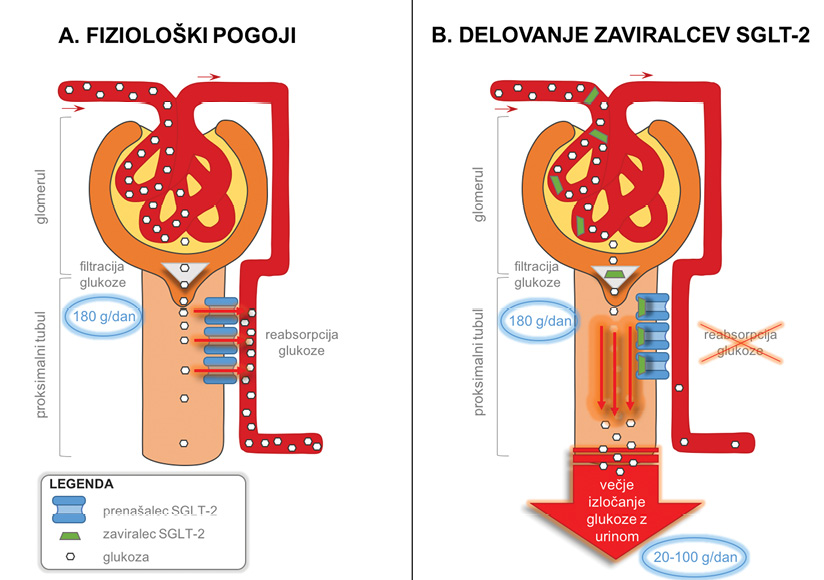

Zaviralci SGLT-2: novost v zdravljenju sladkorne bolezni tipa 2
SGLT-2 inhibitors: a novelty in the treatment of type 2 diabetes
Izvleček
Zaviralci natrij-glukoznega prenašalnega sistema 2 (SGLT-2) so najnovejša skupina zdravil za zdravljenje sladkorne bolezni tipa 2, ki so v klinični uporabi zadnjih nekaj let. V proksimalnih tubulih ledvic zmanjšajo reabsorpcijo glukoze, ki se zato izloči z urinom. Zato se zniža koncentracija glukoze v krvi in nastopi ugodni vpliv na urejenost glikemije, obenem pa s tem ne povečajo tveganja za hipoglikemijo. Zaviralci SGLT-2 imajo tudi ugodne presnovne učinke, in sicer znižajo telesno maso, krvni tlak in koncentracijo sečne kisline v serumu. Upočasnijo tudi napredovanje začetne diabetične ledvične bolezni. Za nekatere predstavnike so tudi pokazali, da pomembno zmanjšujejo pojavnost srčno-žilnih dogodkov in zapletov, vendar mehanizem še ni v celoti raziskan in je predmet intenzivnega preučevanja. Redko povzročijo resne neželene učinke. V prispevku je opisan mehanizem delovanja zaviralcev SGLT-2, njihov vpliv na urejenost glikemije in drugo: presnovni učinki, vpliv na pojavnost srčno-žilnih bolezni in najpogostejši neželeni učinki ter možnosti predpisovanja zaviralcev SGLT-2 v Sloveniji.
Abstract
Sodium glucose co-transporter-2 (SGLT-2) inhibitors are the newest group of drugs for the treatment of diabetes mellitus type 2, which have been in clinical use for the last few years. They act in the proximal renal tubules by reducing the glucose reabsorption, the glucose then being excreted in the urine. Consequently, by decreasing blood glucose levels, they have a favourable effect on the glycaemia control and importantly do not increase the risk of hypoglycaemia. SGLT-2 inhibitors also possess favourable metabolic effects, especially on weight reduction, blood pressure reduction and serum uric acid level reduction. They also slow down the progression of the diabetic kidney disease. For some SGLT-2 inhibitors it was also shown that they exert beneficial effects on the cardiovascular system by reducing cardiovascular events and complications through yet unknown mechanisms, which are subject of intensive study. SGLT-2 inhibitors rarely cause serious side effects. The present manuscript describes the mechanism of action of SGLT-2 inhibitors, their effect on the glycaemia control, metabolic effects, effects on the incidence of cardiovascular disease, the most common side effects and prescribing restrictions for SGLT-2 inhibitors in Slovenia.
1 Uvod
Sladkorna bolezen je presnovna bolezen, za katero je značilna kronično povišana raven krvnega sladkorja. Njena pojavnost je v porastu in ima že pandemične razsežnosti. Ocenjujejo, da je imelo v letu 2017 sladkorno bolezen že 425 milijonov odraslih na svetu. Predvidevajo, da bo število bolnikov s sladkorno boleznijo do leta 2040 porastlo na okoli 642 milijonov. Do leta 2025 naj bi se tudi število smrti zaradi sladkorne bolezni in njenih zapletov povečalo za 50 % (1,2).
Z obstoječimi zdravili urejenost glikemije še zdaleč ni optimalna, kar zahteva razvoj novih antihiperglikemičnih zdravil. Zaviralci natrij-glukoznega prenašalnega sistema 2 (
Prvi zaviralec SGLT-2 je bil florizin (
2 Mehanizem delovanja
Glukoza se v glomerulu prosto filtrira. Dnevno se pri posameznikih brez sladkorne bolezni filtrira približno 180 g glukoze, ki se nato skoraj v celoti reabsorbira v proksimalnem tubulu. Na ta način ledvice preprečujejo izgubo glukoze (1,4). Ko je presežen prag reabsorpcijske sposobnosti ledvic za glukozo, se pri zdravih pozameznikih prične izločanje glukoze z urinom (glukozurija). To se običajno zgodi, ko koncentracija glukoze v plazmi poraste nad 11 mmol/l (5). Na ta način ledvice delujejo zaščitno, saj preprečijo nadaljnji porast plazemske koncentracije glukoze in njene škodljive učinke (6).
V proksimalnem tubulu se glukoza lahko reabsorbira pasivno preko prenašalcev GLUT in z aktivnim prenosom preko prenašalcev SGLT (4,6). Slednji opravijo privzem glukoze v celice, za kar uporabijo gradient natrija, ki se ustvari s pomočjo Na-K ATP-azne črpalke na bazolateralni strani celic (1). Poznamo dva tipa prenašalcev SGLT, in sicer SGLT-1 in SGLT-2. Prenašalci SGLT-1 se nahajajo predvsem v tankem črevesju, ledvicah, srcu in skeletnih mišicah, kjer skrbijo za aktivno absorpcijo glukoze v omenjena tkiva. SGLT-2 pa se nahajajo skoraj izključno v ledvicah, in sicer v proksimalnih tubulih. Tam omogočajo reabsorpcijo 80–90 % filtrirane glukoze, SGLT-1 pa je odgovoren za manj kot 10 % njene reabsorpcije (4-7). Pokazali so, da se število prenašalcev SGLT-2 pri bolnikih s sladkorno boleznijo presenetljivo poveča (1). Njihovo povečano izražanje ob porastu plazemske koncentracije glukoze omogoča zvišanje praga za glukozurijo, poveča se sposobnost reabsorpcije glukoze v proksimalnih tubulih, s čimer se koncentracija glukoze v plazmi še dodatno poviša (5).
Zaviralci SGLT-2 delujejo tako, da zavirajo delovanje prenašalcev SGLT-2 v proksimalnih tubulih in s tem preprečijo reabsorpcijo glukoze. Zato se poveča glukozurija, kar zniža plazemsko koncentracijo glukoze in privede do ureditve glikemije (8). Pod vplivom zaviralcev SGLT-2 se dnevno izloči 20–100 gramov glukoze, kar predstavlja izgubo od 90–450 kcal dnevno (4). Delovanje zaviralcev SGLT-2 je odvisno od koncentracije glukoze v plazmi, saj se njihov učinek zmanjša ob nižjih vrednostih glukoze. Pri osebi brez sladkorne bolezni tako zaviralci SGLT-2 ne povzročijo enakega znižanja glukoze kot pri bolnikih s sladkorno boleznijo. Zaviralci SGLT-2 delujejo neodvisno od delovanja na izločanje insulina, zato ne povzročijo izčrpanja ß-celic trebušne slinavke in ne povečajo tveganja za hipoglikemijo (6). Mehanizem delovanja zaviralcev SGLT-2 je prikazan na Sliki 1.

3 Osnovno antihiperglikemično delovanje
V številnih raziskavah so pokazali, da zdravljenje z zaviralci SGLT-2 zniža HbA1c. Znižanje je bilo odvisno od izhodiščne vrednosti, in sicer je prišlo do znižanja HbA1c za 0,51–1,45 % ob izhodiščnem HbA1c med 7 in 9,1 % (1). V povprečju je ob zdravljenju z zaviralci SGLT-2 prišlo do znižanja HbA1c za 0,69 % v primerjavi s placebom (3). V raziskavi Empagliflozin Cardiovascular Outcomes and Mortality in Type 2 Diabetes trial (EMPA-REG OUCOME) so ugotovili, da empagliflozin v odmerku 10 mg dnevno zniža HbA1c za 0,54 %, v odmerku 25 mg dnevno pa za 0,6 % (9). Zdravljenje z zaviralci SGLT-2 zniža koncentracijo glukoze na tešče v povprečju za 0,9 mmol/l v primerjavi s placebom (3).
Pojavnost hipoglikemij ob zdravljenju z zaviralci SGLT-2 ni bila večja v primerjavi s placebom. Najverjetneje je razlog je v tem, da delujejo popolnoma neodvisno od insulina. Poleg tega se učinek zaviralcev SGLT-2 ob znižanju koncentracije glukoze v plazmi zmanjša, zato se tudi na ta način prepreči nastanek hipoglikemije (5). Večjo pojavnost hipoglikemij so beležili le v primeru, ko so bolniki poleg zaviralca SGLT-2 prejemali druga antihiperglikemična zdravila, ki lahko povzročajo hipoglikemijo, kot so npr. sulfonilsečnine ali insulin (6). Zaviralci SGLT-2 so povzročili statistično značilno manj blagih hipoglikemij v primerjavi s sulfonilsečninami, pri katerih je bila pojavnost blagih hipoglikemij za približno 30 % večja kot pri placebu (10). Metaanaliza raziskav je pokazala, da je ob zdravljenju z dapagliflozinom in empagliflozinom verjetnost blage hipoglikemije nizka in primerljiva s placebom (3). Na Sliki 2 je prikazan povzetek osnovnih učinkov zaviralcev SGLT-2 ter njihovih ugodnih in neželenih učinkov (opisani v nadaljnjem besedilu).
4 Ugodni presnovni učinki
4.1 Znižanje telesne mase
Ob zdravljenju z zaviralci SGLT-2 pride do znižanja telesne mase za 1–5 kg, kar je običajno 2–5 % telesne mase. Večje znižanje so beležili pri bolnikih z dalj časa trajajočo sladkorno boleznijo in z višjo izhodiščno telesno maso (6). V raziskavi Lioudaki in sodelavcev so ugotovili, da je učinek zaviralcev SGLT-2 na znižanje telesne mase odvisen od odmerka zdravila, in sicer so pri nižjih odmerkih zaviralcev SGLT-2 beležili upad telesne mase za 1,61 kg, pri višjih odmerkih pa do 2,66 kg; pomemben podatek je, da so ob tem beležili tudi zmanjšanje obsega pasu (7). V drugi metaanalizi raziskav so ugotovili, da zaviralci SGLT-2 povzročijo pomembno znižanje telesne mase, in sicer dapagliflozin za 1,3–2,24 kg in empagliflozin za 1,84–1,93 kg. Statistično značilno razliko v znižanju telesne mase ob višanju odmerka zaviralca SGLT-2 so ugotovili pri zdravljenju z dapagliflozinom, pri zdravljenju z empagliflozinom pa te povezave niso potrdili (11). V primeru, ko so zaviralce SGLT-2 dodatno uvedli ob zdravljenju z insulinom, so s tem preprečili porast telesne mase zaradi samega zdravljenja z insulinom (6).
Pri bolnikih, zdravljenih z zaviralci SGLT-2, so ugotovili hitro izgubo telesne mase v prvih 12–26 tednih zdravljenja, temu pa je sledilo obdobje, ko se je telesna masa v naslednjih 26 tednih ustalila ali le minimalno upadla. Izgubo telesne mase v začetnem obdobju povezujejo z izgubo tekočine zaradi osmozne diureze, kasnejšo pa z izgubo maščobnega tkiva. Glede na meritve z dvoenergijsko rentgensko absorpciometrijo (
4.2 Znižanje koncentracije sečne kisline
Serumska vrednost sečne kisline oz. urata je pogosteje zvišana pri bolnikih s sladkorno boleznijo tipa 2 in je povezana z nastankom njenih kroničnih zapletov (6,12). Zaviralci SGLT-2 znižajo koncentracijo sečne kisline za 10–13 %; znižanje je večje pri posameznikih z višjimi izhodiščnimi vrednostmi (7). Pri zdravljenju s kanagliflozinom je prišlo do normalizacije vrednosti sečne kisline v serumu pri 20–30 % bolnikov s povišanimi vrednostmi. Dapagliflozin je tudi znižal koncentracijo sečne kisline. Učinek je izzvenel po ukinitvi zdravila. Empagliflozin je prav tako znižal koncentracijo sečne kisline (12). Najverjetneješi mehanizem je povečanje izločanja glukoze z urinom, saj ob tem pride do večje izmenjave sečne kisline na apikalni membrani tubulnih celic in povečanega izločanja sečne kisline iz krvi v urin. Slednje najverjetneje nastane zaradi vpliva na transportni sistem za sečno kislino v ledvičnih tubulih, npr. GLUT-9 (12).
4.3 Učinki na presnovo maščob
Bolniki s sladkorno boleznijo tipa 2 imajo običajno profil krvnih maščob, za katerega so značilni hipertrigliceridemija, nizka koncentracija lipoproteinov z visoko gostoto (
4.4 Učinek na delovanje jeter
Zaviralci SGLT-2 v primerjavi s placebom znižajo raven alanin-aminofransferaze (ALT) za 2,8 IU/l. Ta učinek je ugoden pri nealkoholni zamaščenosti jeter, vendar ni jasno, ali je znižanje ALT posledica znižanja telesne mase zaradi delovanja zaviralcev SGLT-2 ali pa posledica njihovega neposrednega delovanja na jetra (3).
5 Ugodni nepresnovni učinki
5.1 Znižanje krvnega tlaka
Ugodne učinke zaviralcev SGLT-2 na znižanje krvnega tlaka so dokazali v več manjših in večjih raziskavah, pri katerih so beležili statistično značilno znižanje tako sistolnega kot diastolnega krvnega tlaka. Trend znižanja je večji pri sistolnem tlaku, učinek je odvisen od učinkovine in odmerka zaviralca SGLT-2. Učinki na krvni tlak so bili neodvisni od urejenosti glikemije in stopnje znižanja telesne mase (učinki, vidni kmalu po začetku zdravljenja z zaviralci SGLT-2), do večjega znižanja krvnega tlaka je prišlo pri bolnikih, ki so imeli višji izhodiščni sistolni tlak (6,7). V metaanalizi Shyangdana in sodelavcev so pokazali, da zdravljenje z zaviralci SGLT-2 v monoterapiji ali v kombinaciji z metforminom vodi v znižanje krvnega tlaka v primerjavi s placebom, in sicer do –2,6 mmHg pri zdravljenju z empagliflozinom 10 mg dnevno, in do –6 mmHg pri zdravljenju s kanagliflozinom 300 mg dnevno. V isti raziskavi so pokazali, da je povprečno znižanje sistolnega tlaka pri zdravljenju z zaviralci SGLT-2 za –3,77 mmHg in diastolnega tlaka za –1,75 mmHg. Pomembno je poudariti, da učinek zaviralcev SGLT-2 na znižanje krvnega tlaka ni bil povezan s porastom srčne frekvence (13). Največje znižanje krvnega tlaka je bilo ugotovljeno pri bolnikih, zdravljenih s kanagliflozinom (3).
Ključna mehanizma, preko katerih zaviralci SGLT-2 povzročijo znižanje krvnega tlaka, sta najverjetneje osmozna diureza in povečano izločanje natrija z urinom (zmanjšanje količine natrija v telesu). Povečanje dotoka natrija v
5.2 Zaščitno delovanje na ledvice
Zaviralci SGLT-2 delujejo zaščitno na ledvice, in sicer preko izboljšanja urejenosti glikemije, preko znižanja krvnega tlaka in verjetno tudi preko neposrednega učinka na ledvice (zmanjšanja glomerulne hiperfiltracije, vnetja in fibroze). Z napredovanjem diabetične ledvične bolezni sčasoma prihaja do upada hitrosti glomerulne filtracije, s čimer se zmanjšuje tudi učinkovitost zaviralcev SGLT-2, saj se jih manj filtrira na mesto delovanja. Pri oGF < 45 ml/min/1,73 m2 izzveni njihov učinek na HbA1c, ne pa tudi ostali nepresnovni učinki (15).
Diabetična ledvična bolezen nastane kot posledica več dejavnikov. Dva pomembna mehanizma vodita v glomerulno hiperfiltracijo, in sicer gre za okvarjeno nevrohumoralno aktivacijo (hemodinamski učinek) in tubulne dejavnike. Pri prvem gre za zmanjšanje tonusa aferentne arteriole v primerjavi z eferentno in porast znotrajglomerulnega tlaka, ki vodi v glomerulno hiperfiltracijo. Opisano je posledica povečane aktivnosti angiotenzina II, ki ima afiniteto za konstrikcijo eferentne arteriole. Drugi mehanizem se nanaša na povečano glukozno breme v proksimalnem tubulu in s tem čezmerno aktivnost SGLT-2 in SGLT-1 ter povečano tubulno reabsorpcijo glukoze in natrija v proksimalnih tubulih ter posledično aktiviranje tubulno-glomerulne povratne zanke, saj se zmanjša dotok natrija v
Zaviralci SGLT-2 povečajo dotok filtriranega bremena v distalni del nefrona, predvsem natrija, ki preko
5.3 Ugodno delovanje na srčno-žilni sistem
Od leta 2008 FDA zahteva raziskave srčno-žilne varnosti pri zdravilih za zdravljenje sladkorne bolezni. Za zaviralce SGLT-2 imamo do izdaje tega članka na voljo rezultate dveh tovrstnih raziskav, in sicer že omenjeno EMPA-REG OUTCOME, ki je preučevala srčno-žilno varnost empagliflozina, ter Canagliflozin Cardiovascular Assesment Study (CANVAS), ki je preučevala varnost kanagliflozina; obe pri bolnikih s sladkorno boleznijo tipa 2. Raziskavi sta bili različno zasnovani, saj je EMPA-REG vključevala 99,5 % bolnikov, ki so predhodno že imeli srčno-žilni dogodek, medtem ko so v CANVAS vključili 67 % takih bolnikov. Primarni cilj obeh raziskav je bil ugotoviti učinek posameznih zaviralcev SGLT-2 na tri velike srčno-žilne dogodke (
Pomembno je poudariti, da so v obeh opisanih raziskavah v skupinah zdravljenih z zaviralcem SGLT-2 beležili tudi pomembno manj hospitalizacij zaradi srčnega popuščanja, in sicer v raziskavi EMPA-REG za 35 % in v raziskavi CANVAS za 33 % v primerjavi s placebom (17-19). Opisanega ugodnega učinka se ne da pojasniti le s stopnjo vpliva na glikemijo, zato se sklepa, da gre za od glikemije neodvisen učinek, ki pa do sedaj še ni bil dokončno raziskan. V dosedanjih raziskavah so ugotovili, da zaviralci SGLT-2 zmanjšajo prostornino plazme in izboljšajo natriurezo ter odgovor na diuretično zdravljenje. Poleg tega tudi usmerijo miokard v energetsko bolj ugodno stanje (poraba ketonskih teles je v primerjavi s porabo glukoze namreč povezana z manjšo porabo kisika v miokardu za doseganje enakega dela). Zanimiv in verjetno pomemben mehanizem varovalnih učinkov na srčno-žilni sistem je tudi porast koncentracije serumskega magnezija. Znano je namreč, da magnezij varuje miokard pred pomembnimi motnjami srčnega ritma (20). Zaradi ugodnih učinkov na ledvice zaviralci SGLT-2 zmanjšujejo stopnjo ledvične okvare tudi pri bolnikih s srčnim popuščanjem. K vsemu naštetemu prispeva tudi ugoden učinek na endotelno funkcijo. Vse opisano kaže tudi na morebitno učinkovitost pri bolnikih s srčnim popuščanjem z ohranjenim iztisnim deležem, pri katerih do sedaj ni bilo na voljo zadovoljivih terapevtskih možnosti (8,21).
Mehanizmi ugodnih učinkov zaviralcev SGLT-2 na srčno-žilni sistem še niso povsem raziskani. Verjetno gre za posredovanje preko znižanja arterijskega tlaka in znižanja togosti arterij, oba pa povzročata znižanje poobremenitve srca, kar povzroča zmanjšanje energetske porabe kiska v miokardu in povzroči izboljšanje srčne funkcije. Dodatno verjetno delujejo tudi preko znižanja telesne mase, nimajo spodbujevalnega učinka na simpatično živčevje, povečajo izločanje natrija iz telesa, zmanjšajo oksidativni stres, povečajo izločanje glukagona in verjetno ugodno delujejo tudi preko drugih, še nepoznanih mehanizmov (1,7,17). Trenutno poteka sicer intenzivno preučevanje vseh mehanizmov. Predvidevamo, da bodo rezultati teh raziskav pomembno prispevali k izboljšanju preprečevanja srčno-žilnih dogodkov pri bolnikih s sladkorno boleznijo.
6 Neželeni učinki
V velikih raziskavah je bila pojavnost neželenih učinkov zaviralcev SGLT-2 podobna kot pri drugih skupinah antihiperglikemičnih zdravil. Ocenjujejo, da je bilo resnih neželenih učinkov med 1,0 in 12,6 % (6). Najpogostejši neželeni učinki zdravljenja z zaviralci SGLT-2 so okužbe sečil (vulvitis, vulvovaginitis, balanitis in balonopostitis). Okužbe spolovil je možno preprečevati z dobro higieno. Po drugi strani pa povečanega števila okužb sečil niso beležili (6). Povečano pojavnost genitalnih okužb pripisujejo povečanju količine glukoze v urinu, kar spodbuja razrast gliv in omogoča lažje množenje bakterij (1). Zaviralci SGLT-2 povzročajo tudi osmozno diurezo in zato relativno hipovolemijo, kar lahko vodi v ortostatsko hipotenzijo, ki se je v raziskavah pojavljala v manj kot 3 %. Možnost se poveča, če zaviralce SGLT-2 predpišemo ob že obstoječem diuretičnem zdravljenju (1,6). V izogib dehidraciji se zato priporoča dodatno zaužiti še vsaj 500 ml nesladkane tekočine dnevno (3). Zaviralci SGLT-2 tudi povečajo koncentracijo LDL, in sicer do 10 %, kar so beležili pri vseh predstavnikih skupine (povprečno zvišanje za 0,09 mmol/l) (3). Opisali so tudi minimalno zmanjšanje nastajanja kostnine in porast označevalcev kostne resorpcije, vendar ob tem ni bilo pomembnih sprememb v mineralni kostni gostoti (6). Ne glede na to, so v raziskavi CANVAS beležili do 23 % povečano pojavnost nizkoenergetskih zlomov, predvsem nadlakti in reber (17). Omenjeni pojav so pripisali manjšemu porastu serumskega fosfata. Izkazalo se je namreč, da zmanjšana reabsorpcija natrija v proksimalnem tubulu vodi v povečanje reabsorpcije natrija skupaj s fosfatom preko drugega prenašalca, ki se prav tako nahaja v proksimalnem tubulu. Neto učinek porasta serumskega fosfata je povečana aktivnost parathormona in povečana resorpcija kostnine, po drugi strani pa se iz enakega razloga zmanjša tvorba vitamina D ter absorpcija kalcija. Oboje vodi v zmanjšanje kostne gostote (20). Dodatno so za kanagliflozin pokazali, da povzroča minimalni porast serumske koncentracije kalija, predvsem pri bolnikih z okrnjenim ledvičnim delovanjem oz. pri tistih, ki so že prejemali zdravila z vplivom na koncentracijo kalija: običajno gre za zaviralce sistema renin-angiotenzin. Opisanega pojava pri empagliflozinu ali dapagliflozinu niso beležili. Neto porast seurmske koncentracije kalija je posledica nasprotujočih si mehanizmov, pri katerih prevlada učinek tistih, ki kalij zadržujejo (20).
V raziskavi CANVAS so v skupini, ki je prejemala kanagliflozin, beležili dvakrat večje tveganje za amputacijo spodnjih udov v primerjavi s skupino, ki je prejemala placebo. Večjo pogostost amputacij so beležili pri moških in pri tistih, ki so že imeli amputacijo, nevropatijo ali periferno arterijsko bolezen. Stopnja tveganja za amputacijo ni bila odvisna od odmerka zdravila. Natančen vzrok ni poznan, domneva pa se, da bi bil razlog lahko povečana hemokoncentracija ob izraziti osmozni diurezi in hipovolemiji (17,19).
Pri zdravljenju z zaviralci SGLT-2 so opisali tudi primere diabetične ketoacidoze. V veliki večini primerov je šlo za bolnike s sladkorno boleznijo tipa 1, ki so zaviralce SGLT-2 prejemali mimo odobrene indikacije, t. i. “off-label” indikacija. Opisani pa so tudi primeri pojava ketoacidoze pri bolnikih s sladkorno boleznijo tipa 2, ki se je pri večini pojavila ob sprožilnih dejavnikih, kot so akutna bolezen, okužbe, zmanjšan vnos hrane in tekočin, izpuščen odmerek insulina, kirurški posegi ali uživanje alkohola. Pri nekaterih so opažali nižje vrednosti glukoze, kot jih običajno zaznamo pri diabetični ketoacidozi, v nekaterih primerih pa je bila vrednost glukoze celo v evglikemičnem območju. Potencialni mehanizmi, preko katerih pride do nastanka ketoacidoze ob zdravljenju z zaviralci SGLT-2, so: povečanje razmerja glukagon-insulin, povečano nastajanje prostih maščobnih kislin, prehod iz oksidativne presnove ogljikovih hidratov na oksidativno presnovo prostih maščobnih kislin, zmanjšanje izločanja ketonskih telesc (1,22). Za preprečevanje nastanka diabetične ketoacidoze je potrebno zaviralec SGLT-2 ukiniti pred velikim načrtovanim kirurškim ali drugim invazivnim posegom, to je predvsem pred posegi, pri katerih se pričakuje velika izguba krvi, dehidracija oz. priprava na poseg lahko vodi v dehidracijo (npr. kolonoskopija). Iz enakih razlogov je potrebna opustitev zaviralca SGLT-2 pred večjo telesno dejavnostjo (npr. tek maratona). Priporoča se opustitev zadnjega odmerka vsaj 3 dni pred opisano dejavnostjo oz. vsaj 5 razpolovnih dob zdravila (23). V primeru, da gre za akutno bolezensko stanje (bruhanje, urgentna operacija, šokovno stanje, itd.), je potrebno zaviralce SGLT-2 takoj ukiniti (24). Po drugi strani pa jasnih priporočil za manjše, predvsem kontrastne preiskave, ni. Zdi pa se smiselno ukiniti zdravila pri kontrastnih preiskavah, pri katerih bi lahko pričakovali akutno ledvično okvaro, ki bi pripomogla k razvoju acidoze. V dosedanjih raziskavah zaključujejo, da gre pri ketoacidozi ob zdravljenju z zaviralci SGLT-2 za predvidljivo in zaznavno stanje, ki ga je mogoče preprečiti, pri čemer pa ne priporočajo rutinskega merjenja ketonov v urinu (1,22,24).
Možno je, da je zdravljenje z zaviralci SGLT-2 povezano tudi s povečanjem tveganja za razvoj raka dojke in sečnega mehurja, vendar zaenkrat še ni jasnih zaključkov, predvsem glede na majhno število primerov in nejasnost, ali je bila maligna bolezen prisotna že pred pričetkom zdravljenja. Kljub temu priporočajo, da zdravljenja z zaviralci SGLT-2 ne uvajamo pri bolnikih, ki imajo znani rak mehurja (trenutno ali so ga preboleli v preteklosti) (1).
7 Dostopnost v Sloveniji
Zaviralci SGLT-2 so na mestu pri zdravljenju sladkorne bolezni tipa 2. V Sloveniji imamo trenutno na voljo dve zdravili iz te skupine, in sicer empagliflozin ter dapagliflozin.
Empagliflozin je selektivni zaviralec SGLT-2. Se hitro absorbira, saj najvišjo plazemsko koncentracijo doseže 1–2 uri po zaužitju (25). Razpolovni čas v plazmi je 10,3–18,8 h. Priporočeni dnevni odmerek je 10–25 mg enkrat dnevno. Glede na trenutne smernice je potrebno pri okrnjenem delovanju ledvic odmerek zdravila prilagoditi, in sicer ko ocenjena glomerulna filtracija (oGF) upade pod 60 ml/min, je največji dovoljeni odmerek 10 mg dnevno. Ob oGF pod 45 ml/min je potrebno empagliflozin ukiniti oziroma je kontraindiciran. Pri oGF pod 60 ml/min empagliflozina ne smemo na novo uvajati. Pri jetrni okvari odmerka zdravila ni potrebno prilagajati, so pa klinične izkušnje na tem področju omejene (6,25). V Sloveniji je empagliflozin dostopen pod komercialnim imenom Jardiance in v fiksni kombinaciji z metforminom pod imenom Synjardy.
Dapagliflozin je bolj selektiven za SGLT-2 kot SGLT-1. Po zaužitju se hitro absorbira, najvišjo plazemsko koncentracijo doseže 1–2 uri po zaužitju. Biološka uporabnost je 78 %. Presnova dapagliflozina poteka predvsem v jetrih in ledvicah z uridin difosfat-glukuroniltransferazo (UGT1A9). Priporočeni dnevni odmerek zdravila je 5–10 mg enkrat dnevno. Odmerek dapagliflozina je potrebno prilagoditi pri jetrni okvari, ko se priporoča znižanje odmreka z 10 mg na 5 mg dnevno. Glede na trenutne smernice je dapagliflozin kontraindiciran pri oGF pod 60 ml/min (6,25). V Sloveniji je dapagliflozin dostopen pod komercialnim imenom Forxiga, v fiksni kombinaciji z metforminom pa pod imenom Xigduo.
7.1 Omejitve predpisovanja v Sloveniji
Glede na podatke iz svetovne literature lahko zaviralce SGLT-2 predpisujemo v monoterapiji ali v kombinaciji z drugimi antihiperglikemičnimi zdravili, kot so metformin, sulfonilsečnine, zaviralci dipeptidil peptidaze 4 (DPP-4) ali insulin (3).
V Sloveniji je Zavod za zavarovanje Republike Slovenije (ZZZS) izdal pravila za predpisovanje zaviralcev SGLT-2 pri zdravljenju sladkorne bolezni tipa 2. Zaviralci SGLT-2 se glede na pravila ZZZS za zdravljenje sladkorne bolezni tipa 2 lahko predpišejo le v naslednjih primerih:
1.v kombinaciji z metforminom ali pripravki sulfonilsečnine/repaglinidom pri kontraindikacijah za sulfonilsečnino/repaglinid oziroma metformin ali neželenih učinkih;
2.v tritirnem zdravljenju z optimalnimi odmerki metformina in sulfonil/sečnine/repaglinida, kadar imata bolnik ali zdravnik zadržek za zdravljenje z insulinom ali
3.v kombinaciji z insulinom in metforminom (ali brez metformina v primeru kontraindikacij za metformin ali neželenih učinkov).
Zdravilo je možno predpisati le na osnovi izvida iz specialistične diabetološke ambulante s priporočilom za predpis zdravila (26).
Glede na trenutna priporočila je uvedba SGLT-2 zaviralcev kontraindicirana pri oGF pod 60 ml/min. Empagliflozin lahko bolniki prejemajo v prilagojenen odmerku do oGF nad 45 ml/min. Glede na izsledke najnovejših raziskav pa izgleda, da se bo omejitev predpisovanja glede na oGF znižala ali je celo ne bo več.
8 Potencial uporabe v prihodnosti
Dosedanji ugodni učinki zaviralcev SGLT-2, ki segajo močno prek njihovega osnovnega delovanja na izboljšanje urejenosti glikemije, odpirajo velik spekter možnosti za njihovo širšo uporabo. Sladkorna bolezen že sama po sebi nosi veliko breme srčno-žilne ogroženosti. Zato je pri bolnikih s sladkorno boleznijo poleg dobro urejene glikemije še posebej pomembno, da jih tudi čim bolj zaščitimo pred srčno-žilnimi dogodki. Skupina SGLT-2 zaviralcev nam omogoča oboje. Prednost se kaže tudi pri bolnikih s sladkorno boleznijo, ki so srčno-žilni dogodek že utrpeli. Zaviralci SGLT-2 tudi ugodno vplivajo na ledvično delovanje, kar je še posebno dobrodošlo v začetnih stopnjah diabetične ledvične bolezni. Nenazadnje pa je pomemben tudi njihov vpliv na znižanje telesne mase, ki je pri večini bolnikov s sladkorno boleznijo tipa 2 nad normalno. Idealni kandidati za zdravljenje s zaviralci SGLT-2 bi bili torej bolniki s sladkorno boleznijo tipa 2 z visoko srčno-žilno ogroženostjo, ki so čezmerno prehranjeni in imajo vsaj začetno diabetično ledvično bolezen. Glede na dosedanje rezultate bi lahko pričakovali, da se bo mesto predpisovanja zaviralcev SGLT-2 zaradi vseh ugodnih učinkov povzpelo takoj za metformin; vendar je verjetno velika omejitev cena zdravila. Po drugi strani so potrebne tudi raziskave učinkov dolgotrajenga zdravljenja s zaviralci SGLT-2, ki do sedaj še niso bile opravljene, saj je ta skupina zdravil v klinični uporabi šele zadnjih nekaj let.
9 Zaključek
Zaviralci SGLT-2 so najnovejša skupina antihiperglikemičnih zdravil, ki so v dosedanjih raziskavah pokazali učinkovitost pri ureditvi glikemije, poleg tega imajo tudi druge ugodne presnovne učinke, predvsem znižanje telesne mase. Njihova prednost je tudi v tem, da delujejo po mehanizmu, ki je neodvisen od trebušne slinavke oz. insulina, zato ne povečajo tveganja za hipoglikemijo. Za empagliflozin in kanagliflozin so tudi pokazali, da ščitita pred nastankom srčno-žilnih dogodkov in njihovih zapletov. Zaviralci SGLT-2 so se že po nekaj letih klinične uporabe pokazali kot zelo obetavna skupina zdravil, potrebne pa so še nadaljnje raziskave za preučevanje predvsem dodatnih presnovnih in neželenih učinkov v sklopu dolgotrajnega zdravljenja.